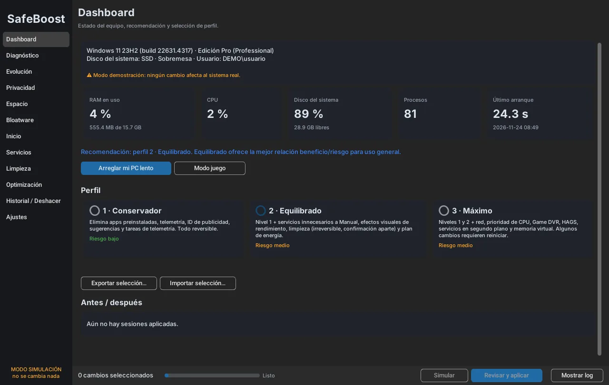
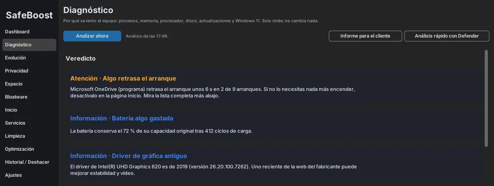
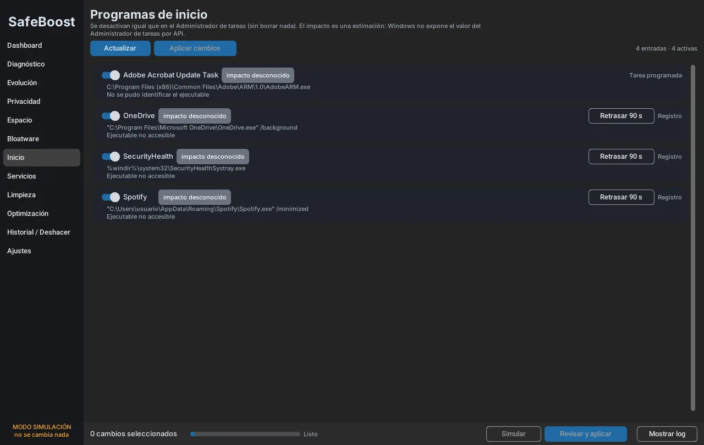
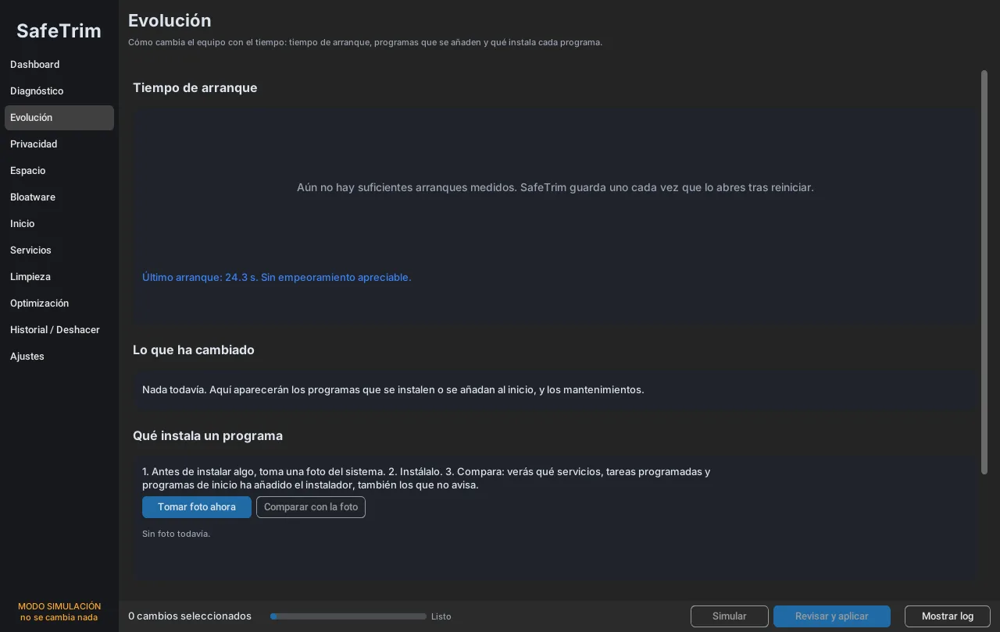

Tu Windows más rápido.
Y todo se puede deshacer.
SafeTrim te dice por qué va lento el equipo y lo arregla con cambios revisables: quita bloatware, retrasa lo que frena el arranque, ajusta servicios y limpia. Cada cambio queda guardado y se deshace con un clic.
Windows 10 22H2 y Windows 11 · Gratis · Sin anuncios

Qué hace
Diagnóstico
Qué consume, qué retrasa el arranque, salud del disco y la batería, seguridad y si tu equipo admite Windows 11.
Arreglar mi PC lento
Un plan ordenado según tu equipo. Lo revisas antes y nada se aplica sin confirmar.
Arranque
Desactiva o retrasa 90 segundos los programas que se abren al encender.
Bloatware y privacidad
Quita apps preinstaladas, telemetría y publicidad de Windows, y te dice quién usó tu cámara.
Espacio
Qué ocupa el disco, duplicados, programas sin usar, caché y extensiones de los navegadores.
Modo juego y modo ahorro
Un clic para jugar con todo a favor o para alargar la batería. Se apagan igual de fácil.
Evolución
Gráfica del tiempo de arranque, prueba de rendimiento y qué instala cada programa a escondidas.
Vigilancia opcional
Un icono junto al reloj que avisa cuando algo nuevo se mete en el arranque.
Así se ve



Por qué es seguro
- Modo simulación por defecto: ves exactamente qué cambiaría antes de cambiar nada.
- Todo se deshace: cada sesión guarda el estado anterior, y hay punto de restauración del sistema antes de los cambios grandes.
- Kit de rescate: un acceso en el menú Inicio deshace todo, incluso en modo seguro.
- No toca lo esencial: Defender, Windows Update, la Store y la red están protegidos.
- Nada sale de tu equipo: sin cuentas, sin telemetría. Solo consulta si hay versión nueva (se puede desactivar).
- Descargas verificables: cada versión publica su huella SHA-256.
Edición Técnico
Para quien arregla equipos de otros. El informe en PDF para el cliente (estado, cambios hechos y recomendaciones de hardware) lleva tu nombre, tu contacto y tu logo. Funciona sin internet, también en la versión portable desde un USB. El resto de SafeTrim es igual y gratis.
Preguntas
¿Windows dice que el programa no es de confianza?
SmartScreen avisa de los programas nuevos sin firma de pago. Pulsa «Más información» → «Ejecutar de todas formas». Puedes comprobar la huella SHA-256 de la descarga con Get-FileHash .\SafeTrim-Setup-X.exe y compararla con la de la página de la versión.
¿Por qué pide permisos de administrador?
Porque cambia ajustes del sistema (servicios, tareas programadas, planes de energía). Sin ellos solo puede simular.
¿Y si algo va mal?
Abre SafeTrim → Historial y pulsa «Deshacer», o usa «SafeTrim · deshacer todo» en el menú Inicio. Si Windows no arranca bien, también puedes usar Restaurar sistema.
¿Funciona en Windows 7, 8 o en versiones antiguas de Windows 10?
No. Solo Windows 10 22H2 y Windows 11, que son los que reciben actualizaciones. En otros solo deja simular.